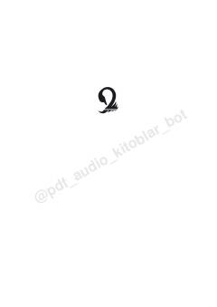

AKTartibsizlik va noaniqlik sharoitida rivojlanish va kuchliroq bo'lish san'ati.
Ushbu kitobda muallif noaniqlik va tartibsizlik sharoitida tizimlarning omon qolishi va rivojlanishi haqidagi nazariyasini bayon etadi. Nassim Taleb xavf-xatarlardan nafaqat himoyalanish, balki ulardan foyda ko'rish va yanada kuchliroq bo'lib chiqish yo'llarini tushuntiradi.